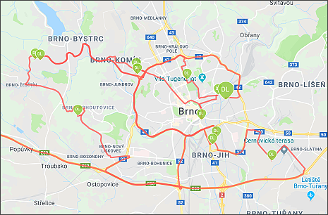
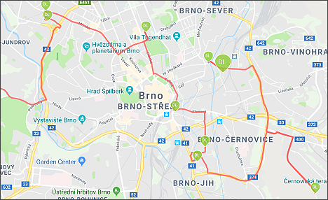

Optimální nastavení trasy
Pokud uživatel toto tlačítko nestiskne, budou adresy seřazeny podle původního nastavení uživatelem z aplikace TRASE.

Po kliknutí se provede optimální nastavení trasy podle Googlu.

Pokud se chce uživatel vrátit ke svému původnímu nastavení, pak je nutné provést Aktualizaci dat.